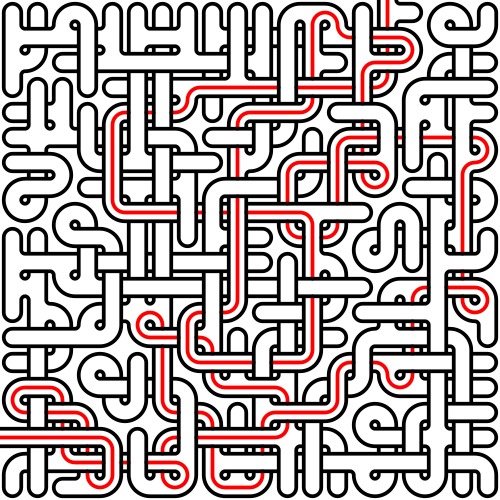

Weave Maze Generator
[ About | Examples | Install | Uninstall | Algorithm | Acknowledgements | License ]
Weave Maze Generator is an app that creates visually mesmerizing mazes, featuring twisty passageways that intertwine over and under each other. It provides options that enable the user to customize the chaos and the style of the vast network of bridges and tunnels. Accessible from both the browser and the command-line, it offers versatile ways to manifest and explore deviously complicated labyrinths.
The browser version and the command-line version support the same set of options. In the left sidebar of the browser version, modifying any options above the horizontal line generates a new maze, while adjusting any options below the horizontal line redraws the existing maze in a new style. In the command-line version, the -h flag outputs a message that details all the options demonstrated below.
The command-line version requires an output directory path, specified with the -d flag:
$ weave-maze-generator -d "." $ ls maze-20240721-110502.pdf maze-20240721-110502.svg maze-solution-20240721-110502.png maze-20240721-110502.png maze-solution-20240721-110502.pdf maze-solution-20240721-110502.svg
It generates six files: three copies of the maze (in PDF, PNG, and SVG formats) and three copies of the maze solution (also in PDF, PNG, and SVG formats).
For this demonstration, we will limit the output to SVG files using the -f flag. By default, the background of the vector file formats (SVG and PDF) is transparent. We will change it with the -b flag, providing the hex color code for solid white. Finally, we will set the maze width and height using the -w and -h flags, respectively, to 20×20 cells:
$ weave-maze-generator -d "." -f svg -b FFFFFF -w 20 -h 20 $ ls maze-20240721-114042.svg maze-solution-20240721-114042.svg
Here is the maze:
And here is the solution:
The default loop factor is 5%. Let’s raise it to 50% with the -l flag:
$ weave-maze-generator -d "." -f svg -b FFFFFF -w 20 -h 20 -l 50
Here is 50% loopiness:
Here is 100% loopiness:

The default cross factor is 25%. Let’s raise it to 50% with the -X flag, while leaving loopiness alone:
$ weave-maze-generator -d "." -f svg -b FFFFFF -w 20 -h 20 -X 50
Here is 50% crossiness:
Here is 100% crossiness:
By default, the app generates mazes with curved walls. Let’s straighten them out with the -s flag:
$ weave-maze-generator -d "." -f svg -b FFFFFF -w 20 -h 20 -s
Here is a maze with straight walls:
Let’s create a traditional maze by setting both the loop and cross factors to 0%:
$ weave-maze-generator -d "." -f svg -b FFFFFF -w 20 -h 20 -s -l 0 -X 0
Here is the result:
Let’s make the passages long with the -L flag:
$ weave-maze-generator -d "." -f svg -b FFFFFF -w 20 -h 20 -s -l 0 -X 0 -L
Here is the long passage maze:
Let’s make the passages narrow with the -g flag:
$ weave-maze-generator -d "." -f svg -b FFFFFF -w 20 -h 20 -s -l 0 -X 0 -L -g 30
Here is the narrow passage maze:
Finally, let’s define the shape of the maze using the following mask image. The app accepts an image containing white pixels for maze cells and black or transparent pixels for empty cells. If the mask contains multiple disjoint white regions, the app will connect them.
The mask image is provided with the -m flag:
$ weave-maze-generator -d "." -f svg -b FFFFFF -m "mask.png"
Here is the “MAZE” maze:
The command-line version of Weave Maze Generator is a Node.js application. If you don't have Node.js installed on your system, follow the steps described here. On macOS and Linux, ensure that npm is set up for global installs without using the root user by following the steps detailed here and here.
To install, issue this command:
npm install -g weave-maze-generator
To uninstall, issue this command:
npm uninstall -g weave-maze-generator
The weave maze generation algorithm is detailed in the following sections.
If the user explicitly specifies the maze dimensions, the algorithm allocates a grid with those dimensions, consisting of square cells. Then it adds a node to each cell:
Alternatively, if the user provides a mask image, the algorithm scans it for white pixels. Upon finding one, it performs a flood fill to identify a fully connected white region. It continues that process, potentially discovering multiple disjoint regions, until all pixels have been inspected. Then the algorithm connects the regions with minimal paths found using Dijkstra’s algorithm:
The algorithm sizes the grid to the mask image dimensions. Then it adds nodes only to cells corresponding to the amended image’s white pixels:
A cross is a structure that bridges a passage over another passage. It consists of four edges and a node that “hovers” above the grid plane. An example appears in the following image. The solid green circle represents the hovering node. It enables the north-south passage to bridge over the east-west passage.
In the variation below, the hovering node permits the east-west passage to bridge over the north-south passage.
The algorithm randomly places crosses until the percentage of cells containing them reaches the user-specified threshold, or until the algorithm has attempted to modify every cell in the grid. The algorithm can add a cross to a cell if the following conditions are met:
Regarding the third condition, the algorithm ultimately constructs a random spanning tree, an undirected graph without cycles, where any two nodes are connected by exactly one path. After the algorithm adds a cross, it checks for cycles using a flood fill. If a cycle is detected, it removes the cross.
When adding a cross, the algorithm accounts for existing edges. In the image below, the algorithm linked two hovering nodes because the adjacent crosses are both north-south-over-east-west type.
However, in the following image, the algorithm did not link the hovering nodes since the adjacent crosses are of different types.
A loop is a structure that bridges a passage over itself. It consists of a cross and two edges:
Since there are two cross types and four ways to add the two edges, there are a total of eight loop types.
Prior to adding pure crosses, the algorithm randomly places loops until the percentage of cells containing them reaches the user-specified threshold, or until the algorithm has attempted to modify every cell in the grid. The algorithm can add a loop to a cell if the following conditions are met:
As with pure crosses, when the algorithm adds a loop, it considers existing edges when linking nodes together. For instance, the following image depicts adjacent loops.
As the algorithm constructs a random spanning tree—a process detailed in the next section—it may inadvertently transform pure crosses into loops, potentially large ones. Or it may add multiple branches to a loop, making it unrecognizable.
The algorithm creates a random spanning tree by linking nodes of adjacent cells until there is a path between every pair of nodes. If the user requests long passages, the algorithm employs randomized depth-first search, which produces a tree with a low branching factor:
Otherwise, it uses randomized Kruskal’s algorithm, which produces a tree with a high branching factor:
Unbiased maze generation algorithms, such as Wilson’s algorithm and the Aldous-Broder algorithm, are impractically slow, especially for large mazes. And while hybrid algorithms that allow the user to tune the branching factor do exist, experimentation revealed the aesthetic advantages of such tuneability are negligible.
The algorithm measures the path lengths between all pairs of edge nodes (those with fewer than four adjacent neighbors) by repeatedly applying a flood fill. It converts the pair separated by the longest path into the terminal nodes:
That process also provides the maze solution path.
To render the maze, the algorithm selects and draws one of eighteen tiles for each cell, determined by the edges connected to its nodes:
If the user requests curved walls, the algorithm uses a tile set with 90° corners replaced by 90° circular arcs:
The same applies to the solution path:
For the vector file formats (SVG and PDF), the algorithm follows the arcs and line segments across the grid and joins them into contiguous paths for optimal rendering and minimal file sizes.
The source is available from the following repositories:
This project drew inspiration from David Bau’s blog entry “Printable Mazes” from October 10, 2006, which describes his first-place winning submission to the 1993 Obfuscated PostScript Contest and provides an online PDF weave maze generator.
Additional insight was gained from Jamis Buck’s blog entry “Maze Generation: Weave Mazes” from March 4, 2011. Chapter 9, “Braiding and Weaving Your Mazes,” from his book “Mazes for Programmers: Code Your Own Twisty Little Passages,” published by The Pragmatic Programmers, LLC, in 2015, also provided useful information.
Anything generated by Weave Maze Generator (both the browser and command-line versions) is covered by the Creative Commons Zero (CC0) license. You are free to use the output for any purpose, whether commercial, personal, or otherwise. No attribution is required, though it would be appreciated if you choose to do so. Feel free to download, modify, distribute, and use the generated output as you wish.